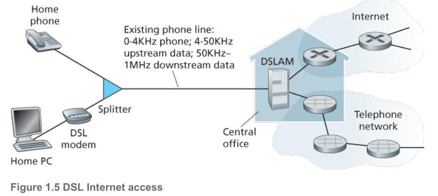
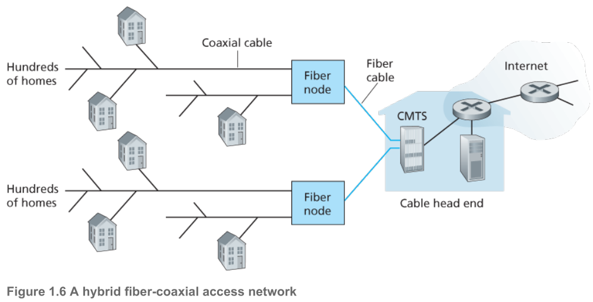
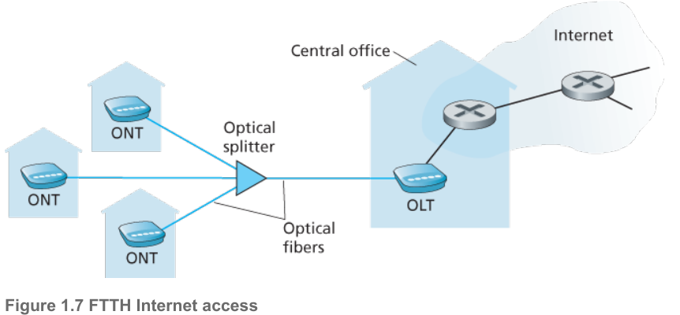
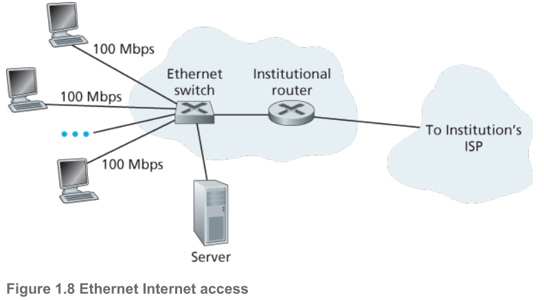
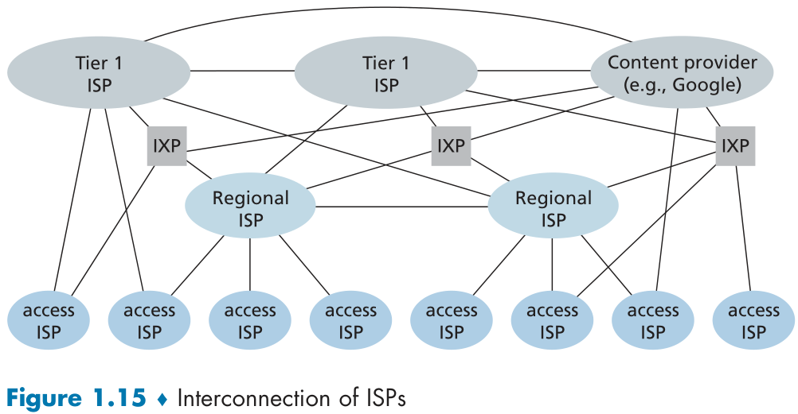
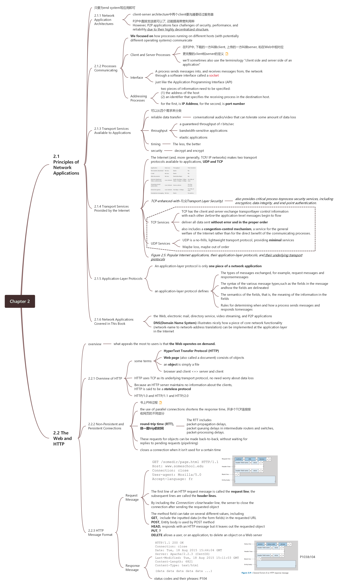

Computer Networking
不可视境界线最后变动于：2022年1月24日 晚上
这里是在寒假期间开始的计网课本笔记, 为了下学期等到老师讲故事的时候能自然的听下去……
第一章: 概论
直接复制(来自这里), 省时间看第八版, 有新的继续补充, 简单的概念罗列不想花时间了,
什么是因特网(两个角度)?
（组成角度） 一种是描述组成它的软硬件；
主机/终端： 所有连入因特网的设备都是主机/终端.
- 如何连接？：端系统通过通信链路和分组交换机连接到一起
- 如何接入因特网？: 端系统通过因特网服务提供商（Internet Service Providers (ISPs)）接入因特网。
分组交换机：
最有的分组交换机：路由器 、链路交换机
作用：从它的一条入链路接收分组，然后从它的一条出链路转发分组。
一个分组所经历的一系列通信链路和分组交换机称为通过该网络的路径route/path。
区别：路由器主要用在网络核心，链路层交换机主要用在接入网中
分组：
- 组成： 分组=用户数据段+相应的必要信息。
- 作用： 端系统之间发送数据时，我们把数据分成一段一段，然后加上必要的信息形成一个一个数据包，这个数据包用术语说叫做分组）（相应的接收端会根据这一个一个数据包，也就是这一个一个分组中的必要信息来获得用户数据段）。
（功能角度） 另一种是将其视为为an infrastructure for providing services to distributed applications.
- End systems attached to the Internet provide a socket interface套接字接口 that specifies how a program running on one end system asks the Internet infrastructure to deliver data to a specific destination program running on another end system.
- 就是一堆rules
协议：
- 定义： 两个或多个通信实体（不一定是端系统，还有可能是分组交换机等）之间交换信息的格式和次序以及对该信息所采取的动作（通俗来说：描述通信双方交互信息的方式，控制报文发送接受，相当于合同的约束）。
- 例子：
- 硬件实现的控制协议控制了两块网卡之间的比特流；
- 在端系统中，拥塞控制协议控制了发送方和接收方之间传输数据的速率等
网络的边缘
端系统： 与因特网相连的计算机和其它设备，往往处于网络的边缘
端系统分类：客户、服务器
- 客户：通常就是台式电脑，笔记本电脑，手机等
- 服务器：一般是用于存储和发布Web页面、中继电子邮件等，属于大型数据中心。
接入网：access networks
概念： 是指将端系统连入到边缘路由器的物理链路
边缘路由器： 是指端系统到任何其他远程端系统路径上的第一台路由器.
本地中心局 local central office (CO).
家庭接入：DSL、电缆、FTTH、==5G Fixed Wireless==
digital subscriber line – DSL(数字用户线): 它的ISP是本地电话公司。其使用的通信链路的物理材质为电话线，是一种双绞线。
- 用户使用DSL调制解调器通过电话线与ISP中的数字用户线接入复用器（digital subscriber line access multiplexer (DSLAM)）来交换数据；家庭DSL调制解调器将数字数据转换为高频音后通过电话线传输到ISP中心，并且通过DSL解调器将DSLAM发送过来的模拟信号转为数字信号
- CIC(Cable Internet Access)电缆因特网接入: 它的ISP是有线电视公司。其使用的通信链路的物理材质有光纤和同轴电缆，也被称为混合光纤同轴=>hybrid fiber coax (HFC).
- 用户使用电缆调制解调器通过同轴电缆与光纤结点相连，光纤结点通过光缆与电缆头端相连，而电缆头端接入了因特网。在电缆头端，电缆调制解调器端接系统（CMTS, Cable Modem Termination System）起到DSLAM的作用，即实现模拟信号和数字信号的转换；
- FTTH(Fiber To The Home)光纤到户: 这里主要是指使用光纤作为通信链路的材质。
- 最简单的光纤分布网络称为直接光纤，从本地中心局到每户设置一根光纤，不过更为一般的是从中心距出来的每根光纤实际上由许多家庭共享，直到相对接近这些家庭的位置，该光纤才被分成每户一根光纤。 
- 有两种: active optical networks (AONs) and passive optical networks (PONs)
- optical network terminator (ONT), which is connected by dedicated optical fiber to a neighborhood splitter
- optical line terminator (OLT) providing conversion between optical and electrical signals, connects to the Internet via a telco router
- 5G fixed wireless开始被部署, 用到了beam-forming(波束成形) technology, 简单来讲就是将信号波集中在一个方向以节约能量以及提高多用户使用速率.
企业（和家庭）接入： 以太网和WIFI
- 以太网（是局域网（LAN）中最流行的接入技术）： 接入是一种在公司、大学、家庭里很流行的接入方式；用户使用双绞线与以太网交换机相连，从而接入因特网；接入以太网交换机的速度可达100Mbps;
- 在无线局域网中，无线用户从一个接入点发送和接收数据，而该接入点与企业网相连，企业网最终接入因特网；在无线LAN中，用户需要在一个接入点的几十米范围之内；
- 广域无线接入： 在移动设备中，通过蜂窝网提供商运营的基站来发送和接收分组，与WIFI不同的是，用户仅需要位于基站的数万米范围之内即可；
Wide-Area Wireless Access: 3G and LTE 4G and 5G
- nothing special, wait until Chapter 7.
硬件设备：
- 传输媒体是构成通信链路的主要部分，物理媒体通常可以分为导引性媒体和非导引性媒体
- 导引性媒体： 信号沿着固体前行
- 非导引性媒体中： 信号沿着固体媒体前行
- 双绞线twisted-pair： 最便宜的引导性传输媒体，由两条相互螺旋缠绕的铜线组成。是局域网的最佳选择.
- 同轴电缆Coaxial cable: 借助特殊的结构和绝缘层，同轴电缆可得到较高的数据传输速率；在电视系统中应用广泛；同轴电缆可被用作 引导性的共享媒体；
- 多模光纤缆multimode fiber-optic cable: 一种可以引导光脉冲的媒体
- 陆地无线电频谱terrestrial radio spectrum: 无线电信道承载电磁频谱中的信号，不需要物理线路，提供与移动用户的连接以及长距离承载信号的方式；是一种有吸引力的媒体；
- 卫星无线电频谱satellite radio spectrum: 通过卫星连接两个或多个在地球上的微波发射方（也被称为地面站），该卫星在一个频段上接收信号，在另一个频段上发送信号；种类有同步卫星和近地轨道卫星；
- 传输媒体是构成通信链路的主要部分，物理媒体通常可以分为导引性媒体和非导引性媒体
网络核心
- 在考察了因特网边缘之后，开始深入研究网络核心，也就是互联网端系统的分组交换机和链路构成的网状网格。Figure 1.10
- 通过网络链路和交换机移动数据有两种基本方法：电路交换和分组交换
分组交换：
- 分组在通信链路上以等于该链路的最大传输速率传输通过通信链路。
- 传输时延（应该是传播时延）： 如果某条链路的最大传输速率为R比特/秒，分组长度为L比特 ，则该链路传输该分组的时间为L/R秒。
- 存储转发传输： 存储转发是指交换机在收到一个完成的分组，才会向链路输出转发分组，否则就将收到的部分分组缓存起来；因为缓存等待一个分组的全部数据而导致的时间开销被称为存储转发时延
- 因为需要缓存分组，所以此时分组交换机需要一个缓冲队列；
- 排队时延与分组丢失：
- 因为需要缓存分组，所以此时分组交换机需要一个输出缓存和，也称为输出队列；缓冲队列的空间有限性就有可能导致分组交换机无法继续缓存分组（因为链路被占用（该链路正忙于传输其他分组）或者分组还没全部到位）而使到达分组交换机的数据包被迫丢弃（分组丢失）（丢包）；这就导致了分组不但承担了存储转发传输时延，还承担了排队时延。这些时延是变化的，变化的程度取决于网络的拥塞程度。
- 转发表与路由选择协议：
- 实际上，分组交换机之所以能够知道往哪去是因为其内部有一个转发表，这个表维护了一个IP地址和链路的对应关系，所以处理流程为：
- 通过分组的必要信息，获得目的端系统的IP地址
- 通过IP地址索引转发表，从而确定输出链路
- 实际上，分组交换机之所以能够知道往哪去是因为其内部有一个转发表，这个表维护了一个IP地址和链路的对应关系，所以处理流程为：
电路交换：
在电路交换网络中，在端系统通信会话期间，交换机会预留端系统间通信路径上的相关资源（缓存，链路传输速率），即先建立连接，然后通信；而在分组交换网络中，这些资源没有被预留；也就是说，在端系统进行通信时，其所需要的资源是被保持的，其他通信是无法使用这一部分资源的；也就说，端系统间真正建立了一条“连接”；而这一连接，用电话的术语被称为“电路”。传统的电话网络就是电路交换网络的例子。
电路交换网络中的复用：
- 时分复用（Time-Division Multiplexing TDM）： 是指将时间划分为固定区间的帧，每个帧则又被划分为固定数量的时间空隙；当网络需要建立一条连接时，网络将在每个帧中为该连接指定一个时隙；在该时隙内，链路用来传输该链接的数据；
- 频分复用(Frequency-Division Multiplexing)： 将频率域划分为频段，然后将频段分配给连接；此频段被用来专门传输链接的数据。该频段的宽度成为带宽。
分组交换和电路交换的对比：
- 分组交换的优点：
- 它提供了比电路交换更好的带宽共享；
- 它比电路交换更简单、更有效、实现成本更低；
- 分组交换的缺点:
- 分组交换不适合实时服务，因为端到端的时延是可变、不可预测的，这和整个网络的情况相关；
- 电路交换的优点：
- 提供了端对端传输数据的速率保证；
- 电路交换的缺点：
- 电路交换存在静默期，这是指专用电路空闲时，其占用的资源并没有得到充分的利用；
- 建立连接的过程比较复杂；
- 总结： 总体上来说，分组交换的性能要好于电路交换的性能，但是不同类型的分组交换方式有不同的应用场景；比如一些对最低速率有着严格要求的应用，比如实时服务等，为了获得速率保证，牺牲网络的效率也是可以接受的。趋势向着分组交换发展网络的网络
- 分组交换的优点：
网络的网络：
该用什么样的结构来刻画因特网呢？因特网是网络的网络
通过5个模型不断过渡到最终模型，其实过渡的过程就结构不断合理、连接方式不断明确的过程
端系统是通过ISP接入因特网的，为了实现端系统的互联，ISP也必须互联，其实网络模型就是用来表达ISP和端系统以及ISP之间的结构的抽象。
网络结构1： 存在唯一的全球传输ISP互联所有的接入ISP，这是指，全球ISP是一个由路由器和通信链路构成的网络，该网络跨越全球，并且其他的接入ISP都至少和一个它的路由器相连（接入ISP被认为是客户，全球传输被认为是提供商）；
网络结构2： 存在多个全球传输ISP，它们分别于一部分的接入ISP互联；为了实现端系统的互联，这多个全球ISP也必须互联；网络结构是一个两层结构，其中全球传输ISP位于顶层，接入ISP处于底层；
网络结构3： 顶层全球传输ISP基本上已经定型，但是接入ISP现在还很混乱，比如，它们直接同顶层ISP相连；而网络结构3中，接入ISP也是分层的：较小区域中的ISP连入较大区域的ISP，而不是直接与顶层ISP相连；为什么会出现这样的结构呢？这是因为，如果都直接同顶层ISP相连，那么两个同一较小区域内，分属不同ISP的端系统之间通信的数据也会到顶层ISP中心去一趟，如果它们不是直接接入顶层ISP，而是接入了一个较大区域的ISP，那么它们之间的通信数据就不用去顶层ISP中心了，因为它们通过较大区域的ISP已经实现了互连，所以通信速度肯定就上去了。
网络结构4: 是在网络结构3的基础上，增加了以下特点而形成的结构：存在点（Point of Presence，PoP）、多宿、对等、因特网交换点（Internet exchange point，IXP）。
- PoP： 存在于等级结构中所有层次，但是底层ISP除外；一个PoP是ISP网络中的一台或者多台路由器群组，其中客户ISP能够通过第三方提供的高速链路直接将它的路由器和供应商的PoP连接，从而实现与提供商ISP连接。这样接入速度很明显就提高了。
- 多宿（multi-home）： 任何ISP（除第一层ISP）都可以与两个或者多个提供商ISP连接，这被称为多宿；这样网络的可靠性就提高了。
- 对等（peer）： 位于相同等级结构层次的一对邻近ISP能够直接将它们的网络连接到一起，使它们之间流量经直接连接而不是经过上游的中间ISP传输，这样既不用付费，速度也可能会快一些
- IXP： 因特网交换点是为了实现多个ISP可以对等而创建的。
网络结构5： 网络结构5是在网络结构4的基础上增加了内容提供商网络而构成。内容提供商构建自己的网络，并且通过与较低层ISP对等而“绕过”较高层因特网ISP，而且内容提供商对端用户也有了更多的控制。
总体来说，今天的因特网是一个“网络的网络”，其结构复杂，由十多个顶层ISP和数十万个较低层ISP构成。近年来，主要的内容提供商创建自己的网络，直接在可能的地方与较低层ISP互联.
分组交换中的时延、丢包、吞吐量:
因特网能够看成是一种基础设施，该基础设施为运行在端系统上的分布式应用提供服务。
理想目标：因特网能够在任意两个端系统之间随心所欲地移动数据而没有任何数据丢失，计算机网络必定要限制在端系统之间的吞吐量（每秒能够传输的数据量），在端系统之间引入时延，而且实际上也会丢失分组
分组交换网中的时延概述：
- 一个分组在沿途每个节点承受不同类型的时延，这些时延中最为重要的是：结点处理时延、排队时延、传输时延和传播时延.这些时延总体累加起来是结点总时延
- 节点总时延==结点处理时延+排队时延+传输时延+传播时延
- 时延类型：
- 节点处理时延nodal processing delay： 是因为节点需要解析分组的必要信息然后决定是哪个出链路（索引转发表等操作）而产生的，通常在微秒或者更低数量级；
- 排队时延queuing delay： 是因为分组所对应的出链路前面有其他分组正在传输，所以分组需要该链路的缓冲队列里等待其他分组传输完毕而产生的，一个特定分组的排队时延长度将取决于先前到达的正在排队等待向链路传输的分组数量。排队时延是到达该队列的流量强度和性质的函数，通常可以达到毫秒级到微秒级；
- 传输时延transmission delay(一个分组的节点全部进入链路的时延)： 传输时延是将所有分组的比特推向链路所有需要的时间，实际的传输时延通常在毫秒到微秒数量级。用L表示分组的长度，用Rbps表示从路由器A到B的链路传输速率。传输时延是L/R。
- 传播时延propagation delay(链路中消耗的)： 是指比特进入链路后，从该链路的起点到下一个结点所用的时间；一旦分组中的最后一个比特到达路由器就意味着该分组的所有比特都已到达路由器；广域网中，传播时延一般是毫秒级的。传播时延是d/s。d是路由器A到B的距离。s是链路的传播速率。
- 传输时延和传播时延的对比：
- 传输时延：大卡车经过收费站的时间（分组长度L / 链路的传输速率）
- 传播时延：大卡车在高速上行驶的时间（两台路由器之间的链路长度d / 两台路由器之间的传输速率）
排队时延和丢包：
- 丢包Packet Loss：到达的分组发现一个满的队列。由于没有地方存储这个分组，路由器将丢弃该分组，该分组将会丢失。
- 排队时延和丢包与网络的状况和结点的缓冲空间大小、处理速度相关；
- 如果分组到达的速度 > 结点的处理速度，那么分组就会在缓冲队列里排队等待。
- 为了描述网络状态，我们引入了流量强度traffic intensity这一概念：流量强度=分组到达的速度 / 结点的处理速度；
- 流量工程里一个金科玉律就是：设计系统时流量强度<=1，流量强度持续大于1时，就将出现丢包现象
端到端时延：
- 端到端时延 ==(节点总时延 * (路由器个数+1) )== （结点处理时延+排队时延+传输时延+传播时延）*（路由器个数+1）
计算机网络的吞吐量：
- 计算机网络的吞吐量实际上是一个速度指标，它描述了比特经过某个节点的速度
- 某节点的吞吐量 == min(发送数据的速度，接收数据的速度)
- 任何时间的瞬时吞吐量： 是主机接受到该文件的速率
- 平均吞吐量： 该分组的L比特 / 主机接收该分组所有的比特用去的时间T
- 吞吐量可以近似为源和目的地之间路径的最小传输速率。最小传输速率的链路为瓶颈链路。
- 在今天，因特网对吞吐率的限制因素通常是接入网。
协议层次及其服务模型：
- 因特网是一个极为复杂的系统，该系统里存在着大量的应用程序和协议、各种类型的端系统、分组交换机和各种类型的链路级媒体。但是它同时也是有着清晰结构的，就像我们前面在网络核心 一节介绍的，我们仍能构建它的结构模型
分层体系结构
- 优点：
- 易于服务实现的多样性,因为某一层对其上一层提供服务，同时它可以利用下一层提供的服务，只要对上提供的服务和对下利用的服务没有变化，其层内部的实现并不会对系统结构产生影响，也就是对于大而复杂且需要不断更新的系统来说 改变服务的实现而不会影响系统其他组件。
- 不用关注下一层如何实现，以及处理故障的细节。
- 协议分层具有概念化和结构化：使得模块化使更新系统组件更为容易。
- 缺点：
- 功能上的冗余， 比如许多协议栈针对链路和端到端两种情况都提供了差错恢复功能
- 某层的功能可能需要仅在其它层才能出现的信息，这违反了层次分离的目标
- 总体来说，将各层的所有协议组合起来，称为协议栈。因特网的协议栈有5个层次组成：物理层、链路层、网络成、传输层、应用层。
- 应用层： 应用层协议分布在多个端系统，端系统中的应用程序使用该协议与另一个端系统中的应用程序通信。处于应用层的分组称为报文。
- 传输层： 传输层在应用程序端点之间传输应用层报文，因特网中有两个传输层协议：==TCP和UDP==。处于传输层的分组称为报文段。TCP提供确保传递、流量控制、拥塞控制机制。UDP提供无连接服务，即不提供不必要服务的服务, 没有可靠性、没有流量和拥塞控制。
- 网络层： 网络层将称为数据报的网络层分组从一台主机移动到另一台主机。网络层协议包含著名的IP协议以及其他一些路由选择协议。
- 链路层： 链路层将称为帧的链路层分组从一个结点移动到路径上的另一个结点。一个帧可能被沿途不同链路上的不同链路层协议处理。
- 物理层： 物理层的任务是将帧中的比特从一个结点移动到 下一个节点，它提供了传输信息的实际物理通道；
- OSI模型：
- 在因特网协议栈出现以前，OSI模型是ISO（国际标准化组织）组织研发的计算机网络结构模型。
- OSI的模型一共有7层；
- 从下到上依次为：物理层，链路层，网络层，传输层，会话层，表示层，应用层。相比因特网体系结构，OSI多了两层。
- 因特网将两层 （会话层，表示层） 的功能留给了开发者自行实现。
封装：
- 一个分组，在不同的层次有不同的称谓，是因为它们经过每一层（自上至下）的时候就被该层封装上了属于该层的相关信息，也就是前面提到的 （分组中的）必要信息 ；于是，每一分层的分组有两种类型的字段：首部字段和有效负载；其中有效负载即为来自上一层的分组数据，而首部字段就是该层加上的必要信息；分组不断被封装（也就是不断地加首部字段，也就是必要信息） 以实现各层协议规定的相关功能。
Networks Under Attack
- The Bad Guys Can Put Malware into Your Host Via the Internet
- The Bad Guys Can Attack Servers and Network Infrastructure
- The Bad Guys Can Sniff Packets
- The Bad Guys Can Masquerade as Someone You Trust
We should seek defenses against sniffing, end-point masquerading, man-in-the-middle attacks, DDoS attacks, malware, and more.
第二章:应用层
还是自己做思维导图吧, 真像以前那样子做的话笔记会详细的过于恐怖了.
书上是从零开始引导式的, 所以会比较详细.
